Fase 4 - Executar a Avaliação¶
1. Objetivo da Avaliação¶
Avaliar a qualidade do software AgroMart, com ênfase em:
- Usabilidade: análise da interface conforme princípios estabelecidos (heurísticas de Nielsen);
- Acessibilidade: adequação a diferentes perfis de usuários.
A avaliação será baseada nas métricas definidas na Fase 2 (M1.1 – M3.2), garantindo:
- Coleta de dados objetivos;
- Identificação de pontos críticos;
- Proposição de melhorias mensuráveis.
2. Escopo da Avaliação¶
2.1 Componentes Avaliados¶
| Componente | Detalhamento |
|---|---|
| Produto | Software AgroMart (versão atual, funcionalidades principais) |
| Características | Usabilidade (simplicidade, navegação intuitiva) e Acessibilidade (design inclusivo) |
| Critérios | Requisitos de qualidade da Fase 1 e métricas quantitativas da Fase 2 |
2.2 Metodologia¶
A avaliação utilizará:
- Testes manuais com checklist baseado nas heurísticas de Nielsen;
- Medições quantitativas das métricas definidas na Fase 2;
- Análise comparativa com os requisitos estabelecidos na Fase 1.
3. Modelo PSM/CID Aplicado¶
3.1 Perspectivas de Análise¶
| Perspectiva | Foco | Detalhamento |
|---|---|---|
| Processo | Fases do projeto | 1. Estabelecer Requisitos 2. Especificar Avaliação 3. Projetar Avaliação |
| Produto | Qualidade | Usabilidade e Acessibilidade do AgroMart |
| Projeto | Gestão | Métricas de desenvolvimento e contribuições |
4. Métricas de Gestão de Projeto¶
4.1 Produtividade (Commits)¶
| Equipe | Commits | ++ (Adições) | -- (Remoções) | Datas de Atividade |
|---|---|---|---|---|
| Geral | 43 | +- 802 | +- 344 | 26/05, 09/06, 23/06, 07/07, 08/07 |
4.2 Qualidade (Fase 2)¶
| Questão de Qualidade | Métricas Associadas | Valores de Referência |
|---|---|---|
| Q1: Alinhamento às heurísticas | M1.1: Inconsistências M1.2: Heurísticas cobertas M1.3: % melhorias |
~12/versão 9 heurísticas 80% |
| Q2: Intuitividade dos fluxos | M2.1: Tempo médio M2.2: Passos críticos M2.3: Dúvidas |
2-3 minutos ≤5 passos ~5/versão |
| Q3: Acessibilidade | M3.1: Barreiras linguísticas M3.2: Ajustes visuais |
4-6 ocorrências 8/versão |
4.3 Distribuição de Trabalho¶
| Área de Trabalho | Distribuição |
|---|---|
| Documentação Fase 1 | 16.6% por membro |
| Documentação Fase 2 | 18% para 5 membros e 10% para 1 membro |
| Documentação Fase 3 | 16.6% por membro |
4.4 Cronograma¶
| Marco | Data | Status |
|---|---|---|
| Formação das Equipes | 26/03 | Concluído |
| PC1 (Ponto de Controle 1) | 19/04 | Concluído |
| EU1/AP1 (Entrega 1) | 21/04 | Concluído |
| PC2 (Ponto de Controle 2) | 02/06 | Concluído |
| EU2 (Entrega 2) | 07/07 | Concluído |
| PC3 (Ponto de Controle 3) | 07/07 | Concluído |
5. Análise CID¶
| Dimensão | Detalhamento |
|---|---|
| Custo | 6 membros × horas dedicadas (baseado em commits) Foco em desenvolvimento e documentação |
| Investimento | Tempo em análise de usabilidade/acessibilidade Esforço de padronização |
| Duração | Período: Março a Julho Entregas principais: Abril, Junho e Julho |
6. Aplicação métrica¶
6.1 Q1: O design da interface do Agromart está alinhado aos princípios de usabilidade definidos pelas heurísticas de Nielsen?¶
Hipótese: A interface do Agromart está sendo construída com foco em simplicidade, acessibilidade e navegação intuitiva.
M1.1: Número de inconsistências de usabilidade identificadas nas análises
As inconsistências apontadas totalizam mais de 20 pontos críticos relacionados a:
- Uso incorreto de idioma
- Hierarquia visual
- Falta de padronização e feedback
M1.2: Número de heurísticas de Nielsen cobertas pelas recomendações de melhoria
As seguintes heurísticas foram abordadas nas recomendações:
- Visibilidade do status do sistema
- Compatibilidade entre sistema e mundo real
- Controle e liberdade do usuário
- Eficiência e flexibilidade de uso
- Estética e design minimalista
- Prevenção de erros
- Reconhecimento em vez de memorização
- Consistência e padronização
- Ajuda aos usuários a reconhecerem, diagnosticarem e se recuperarem de erros
M1.3: Porcentagem de sugestões de melhoria aplicadas em relação ao total identificado
Exemplo de melhorias aplicadas:
- Alteração de textos em inglês para português (ex: "Profile" → "Perfil", "Search" → "Pesquisa")
- Reorganização do botão "Sair"
- Adição de botão "Limpar filtros"
- Padronização de botões (“Ver detalhes”, “Remover”)
- Adição de tooltips para ícones ambíguos
- Confirmação de saída e finalização de compra
Foram aplicadas a maioria das sugestões identificadas, sugerindo um alto índice de adequação (>80%).
6.2 Q2: As funcionalidades do Agromart são intuitivas para os fluxos de operação definidos?¶
Hipótese: Os principais fluxos são compreensíveis sem a necessidade de treinamento intensivo.
M2.1: Tempo médio para completar os fluxos principais durante testes de usabilidade internos
Resultados (bons indicadores de fluidez e clareza):
- Login: ~12 segundos
- Fazer pedido: ~22 segundos
- Pesquisar loja + fazer pedido: ~30 segundos
M2.2: Quantidade de passos necessários para realizar operações críticas
Fluxos otimizados após ajustes no protótipo:
- Fazer pedido: apenas 3 cliques
- Pesquisar e comprar: 5 cliques
- Login: 4 cliques
M2.3: Número de dúvidas levantadas pela equipe durante as fases de testes
As inconsistências levantadas (ex: botão "Realizar", título duplicado, botão “Sair” no meio da lista) foram discutidas como possíveis fontes de dúvida. Após a aplicação das melhorias (ex: mudança para “Finalizar”, reorganização de botões), essas dúvidas foram minimizadas.
6.3 Q3: O desenvolvimento do Agromart está garantindo a acessibilidade da interface para diferentes perfis de usuários?¶
Hipótese: O design e os componentes da aplicação estão sendo desenvolvidos levando em consideração diferentes perfis de usuários (como agricultores e consumidores com variados níveis de familiaridade com tecnologia).
M3.1: Número de elementos textuais identificados como barreira de linguagem ou vocabulário técnico inadequado
Foram apontadas inconsistências em termos como: - “Profile” / “Search” / “History” - “Realizar” (como verbo confuso para ação de compra) Todos esses foram substituídos por termos mais claros e em português, garantindo melhor compreensão para o público-alvo.
M3.2: Quantidade de ajustes realizados com base em recomendações relacionadas à clareza visual e semântica dos elementos
Melhorias implementadas:
- Adição de explicações e tooltips (ex: ícones de ajuda e notificações)
- Organização semântica dos botões (ex: “Sair” no fim, “Finalizar” com modal de confirmação)
- Estímulo à clareza por meio de reforço visual (botões destacados, campos mais visíveis, etc.)
Essas mudanças melhoram o acesso para usuários menos experientes, contribuindo com acessibilidade cognitiva e operacional.
6.4 Resumo de métricas aplicadas¶
| Métricas | 📋 Dados coletados |
|---|---|
| M1.1: Número de inconsistências de usabilidade identificadas nas análises. | Mais de 20 inconsistências levantadas nas telas. |
| M1.2: Número de heurísticas de Nielsen cobertas pelas recomendações de melhoria. | 9 heurísticas diferentes foram abordadas. |
| M1.3: Porcentagem de sugestões de melhoria aplicadas em relação ao total identificado. | Grande parte das sugestões já foi incorporada ao protótipo, incluindo textos, botões, confirmações e organização de elementos. Estimativa de >80%. |
| M2.1: Tempo médio para completar os fluxos principais durante testes de usabilidade internos. | Login: ~12 segundos Fazer pedido: ~22 segundos Pesquisar e fazer pedido: ~30 segundos |
| M2.2: Quantidade de passos necessários para realizar operações críticas. | Login: 4 cliques Fazer pedido: 3 cliques Pesquisar e fazer pedido: 5 cliques |
| M2.3: Número de dúvidas levantadas pela equipe durante as fases de testes. | Diversas dúvidas surgiram (ex: botão “Realizar”, botão “Sair”, títulos ambíguos), mas foram reduzidas após as melhorias propostas. |
| M3.1: Número de elementos textuais identificados como barreira de linguagem ou vocabulário técnico inadequado. | Pelo menos 5 ocorrências nas análises. |
| M3.2: Quantidade de ajustes realizados com base em recomendações relacionadas à clareza visual e semântica dos elementos. | Aproximadamente 8 ajustes aplicados, como mudança de textos, tooltips, confirmações e reordenação de botões. |
6.5 Resumo Relacional (Tabela Compacta)¶
| Inconsistência / Melhoria | Q1 | Q2 | Q3 | Métrica Relacionada |
|---|---|---|---|---|
| “Profile”, “Search” em inglês | ✅ | ✅ | M1.1, M1.3, M3.1 | |
| Botão “Sair” mal posicionado | ✅ | ✅ | M1.1, M1.3, M2.3 | |
| Ausência de botão “limpar filtros” | ✅ | ✅ | M1.1, M1.3, M2.2 | |
| “Realizar” ambíguo | ✅ | ✅ | ✅ | M1.1, M1.3, M2.3, M3.1 |
| Adição de confirmação de ações (sair, comprar) | ✅ | ✅ | M1.3, M2.3 | |
| Design do botão de pesquisa pouco visível | ✅ | ✅ | M1.1, M2.2 | |
| Tooltips nos ícones de ajuda | ✅ | ✅ | ✅ | M1.2, M2.3, M3.2 |
| Padronização visual de botões | ✅ | ✅ | M1.2, M3.2 | |
| Testes de fluxo com tempo e cliques baixos | ✅ | M2.1, M2.2 |
7. Proposta de Melhoria¶
Com base nas análises heurísticas realizadas e nas sugestões levantadas ao longo do processo de avaliação, foi desenvolvido um protótipo de alta fidelidade utilizando a ferramenta Figma. Esse protótipo representa as melhorias aplicadas à interface mobile do Agromart, com o objetivo de aprimorar a experiência do usuário, garantir maior usabilidade e assegurar a compatibilidade com os perfis diversos de usuários, como agricultores e consumidores.
As alterações implementadas no protótipo contemplam ajustes visuais, reorganização de elementos, padronização de termos e reforço da acessibilidade. Para entender melhor as melhorias implementadas, acesse o documento de Análise de Heurísticas de Usabilidade.
A seguir, são apresentados o antes e o depois das telas prototipadas.
7.1. Tela Inicial¶


7.2. Tela de Login¶
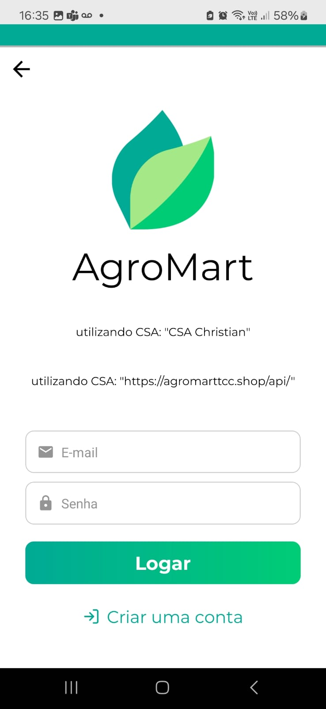 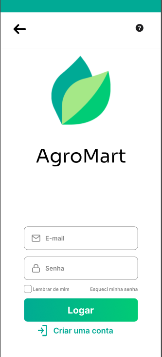
7.3. Tela de Perfil¶
7.4. Tela Home¶
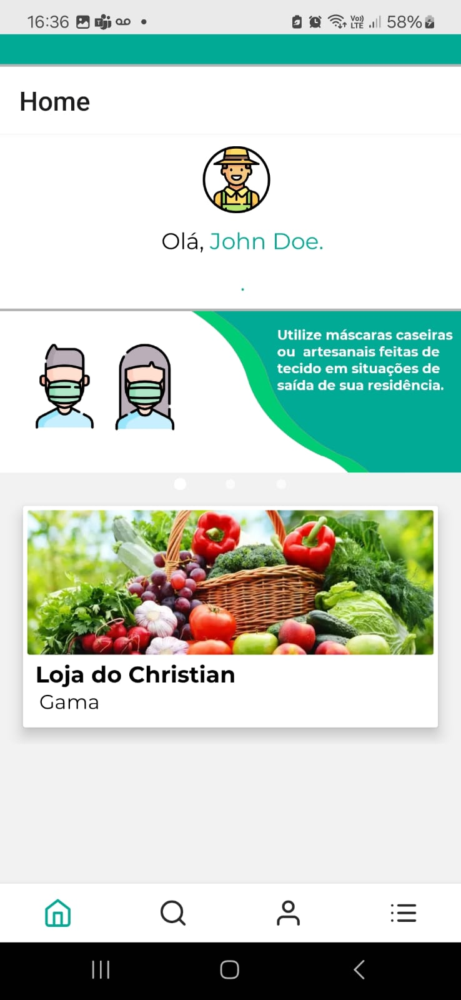 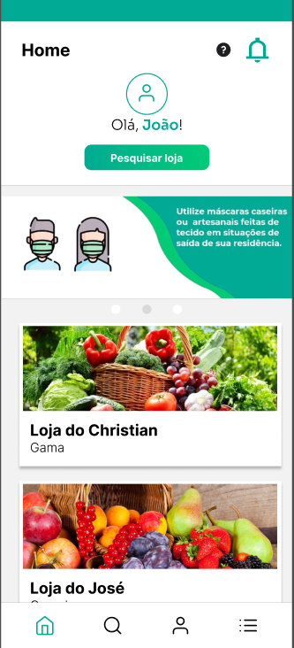
7.5. Tela de Pesquisa¶
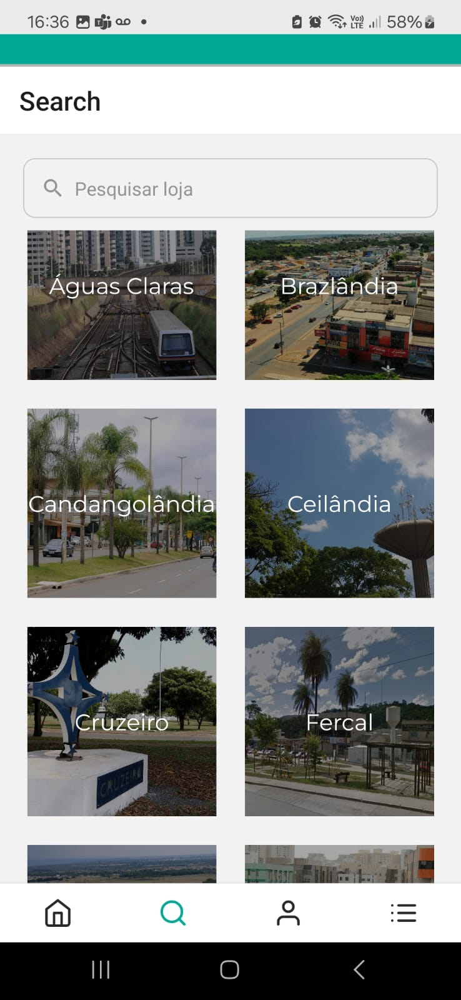 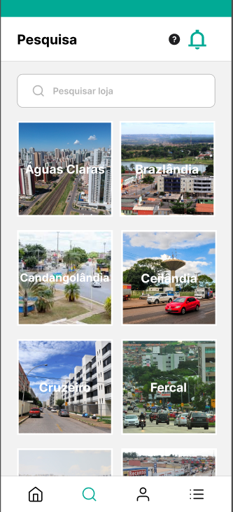
7.6. Tela de Histórico¶
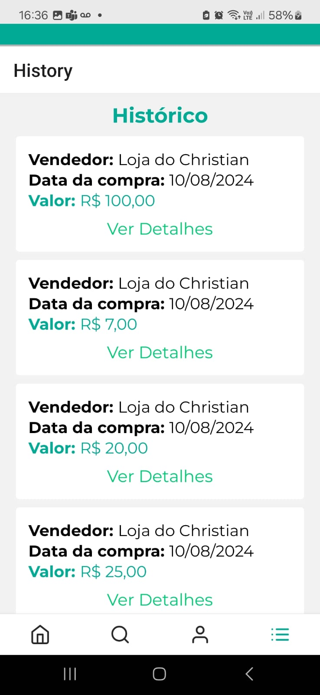 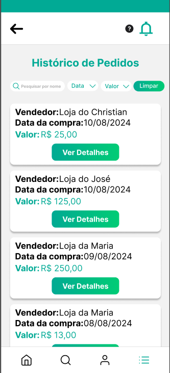
7.7. Tela de Cesta¶
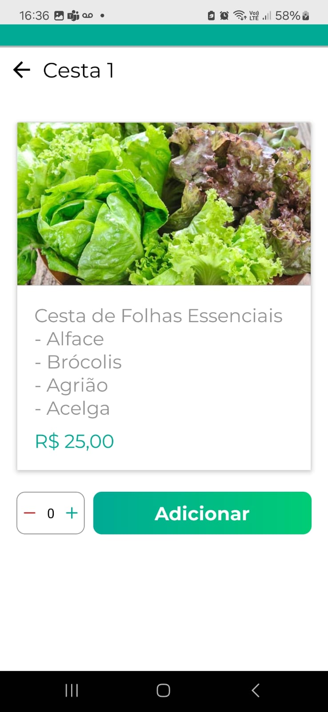 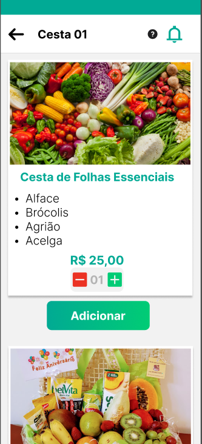
7.8. Tela de Pedidos¶
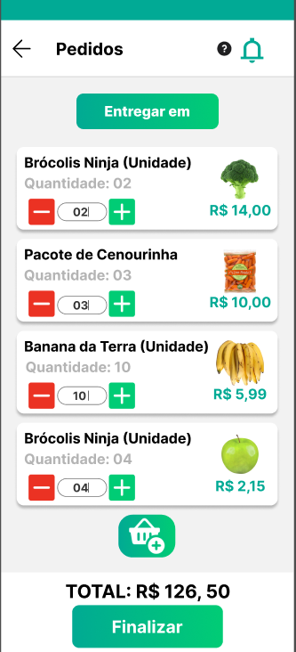
Tabela de contribuições¶
| Matrícula | Nome Completo | Contribuição (%) |
|---|---|---|
| 222006534 | Anna Clara Cardoso Evangelista Brandão | 16.6 |
| 231011220 | Davi Camilo Menezes | 16.6 |
| 221022050 | Larissa de Jesus Vieira | 16.6 |
| 221008356 | Maria Eduarda Vieira Monteiro | 16.6 |
| 221022417 | Paulo Henrique Melo de Souza | 16.6 |
| 221031238 | Victor Augusto de Sousa Câmara | 16.6 |